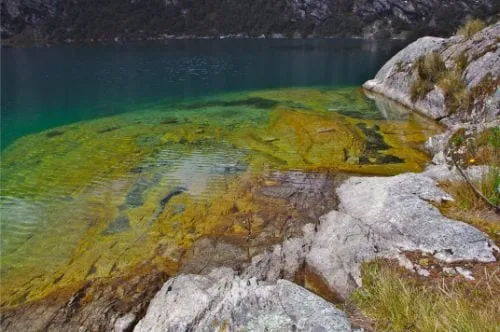
Hacer turismo en Ancash es el sueño de cualquier viajero curioso que recorre el mundo en busca de conocimiento y aventura. Aun así, es imposible ignorar la gran relevancia arqueológica de esta ciudad a la historia peruana y a la americana. Se encuentra menos de 30 minutos por aire de Lima, arribando a región de Anta. Su capital es Huaraz y tiene miles de razones por las que querrás hacer un viaje a Ancash. El Callejón de Huaylas es un valle que ocupa buena parte del departamento y que concentra tantos de los atractivos de Ancash que desde la comida y la bebida hasta los atardeceres todo será una experiencia memorable para el turista. Cuando definas que hacer en Ancash, toma en cuenta que la geografía es variada y las alturas oscilan entre 1000 y casi 7000 metros sobre el nivel del mar. Procura consumir infusión de coca, cuída la piel del sol y garantiza que tu vestimenta sea ligera e impermeable.
Hacer turismo en Ancash es el sueño de cualquier viajero curioso que recorre el mundo en busca de conocimiento y aventura. Aun así, es imposible ignorar la gran relevancia arqueológica de esta ciudad a la historia peruana y a la americana. Se encuentra menos de 30 minutos por aire de Lima, arribando a región de Anta. Su capital es Huaraz y tiene miles de razones por las que querrás hacer un viaje a Ancash. El Callejón de Huaylas es un valle que ocupa buena parte del departamento y que concentra tantos de los atractivos de Ancash que desde la comida y la bebida hasta los atardeceres todo será una experiencia memorable para el turista. Cuando definas que hacer en Ancash, toma en cuenta que la geografía es variada y las alturas oscilan entre 1000 y casi 7000 metros sobre el nivel del mar. Procura consumir infusión de coca, cuída la piel del sol y garantiza que tu vestimenta sea ligera e impermeable.
1.Huaraz
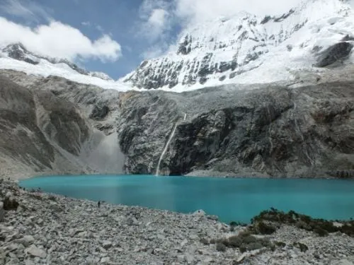Huaraz reúne varios de los atractivos turísticos de Ancash que querrás incluir en tu mapa de viajes. La ciudad tiene cerca de 3100 metros sobre el nivel del mar y ostenta los títulos de “La muy Generosa”, “Capital del Andinismo” y “Capital de la Amistad Internacional”. Se encuentra a 15 minutos de la ciudad de Recuay y es accesible por carretera y aire a través del Aeropuerto Arias Grazianni. En esta tierra de tradiciones se celebran grandes carnavales entre marzo y abril, la Semana del Andinismo y el Día de todos los Santos entre varias otras. Para conocer la cultura desde la cocina local visita Huaraz Querido, una interpretación gourmet fiel a la tradicional comida del Perú. Si piensas viajar en Semana Santa u otra temporada alta, reserva habitación en tu hotel favorito con anticipación. El San Sebastián Hotel Boutique, El Patio Monterrey y el Andino Club Hotel son los hoteles tres estrellas que brindan el mejor hospedaje de la zona. Trata de llevar medicamentos para contrarrestar los estragos de la altura o tomar un mate de coca para disfrutar de tu visita. Deléitate con las vistas de la ciudad en el Santuario del Señor de la Soledad o admira la Calle José Olaya, que resistió el terremoto de 1970. Observar, explorar y hacer trekking son una pequeña porción de todo lo que puedes hacer en Huaraz.
2.Laguna 69
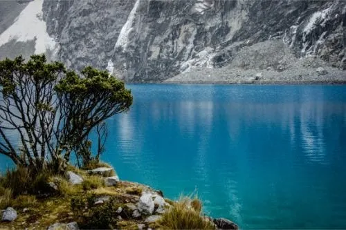Entre los lugares de interés en Ancash para los amantes del trekking está la Laguna 69. A dos horas y media en autobús desde Huaraz u hora y 20 minutos en taxi de Yungay, comprende un sendero de 14 kilómetros de distancia con alturas variables entre los 3868 y los 4600 metros sobre el nivel del mar. Uno de los rasgos más seductores de los senderos, son las incontables caídas de agua que nacen del río que baja a lo largo del camino desde la laguna. Los montes nevados de Huascarán y Pisco entre otros sirven de marco del paisaje. Para mantener esta hermosa vista, no dejes atrás ningún tipo de residuo no biodegradable. Es muy común que los turistas conozcan la Laguna 69 como parte de algún tour que los recoge en el hotel muy temprano y luego los embarca en una ruta por varios puntos de interés. Pero si quieres ir por tu cuenta, opta siempre por guías certificados y regístrate con el personal del Parque Nacional Huascarán indicando qué sendero vas a seguir. Aunque el nombre Laguna 69 está lejos de sonar interesante, la zona en sí misma está entre los lugares protegidos de Ancash que debes conocer. La UNESCO la ha declarado Patrimonio Natural de la Humanidad y Reserva de la Biósfera. Además de la fauna y la flora andina que la distinguen, el vivo color turquesa de sus frías aguas da fe de la castidad del ambiente.
3.Chavín de Huantar
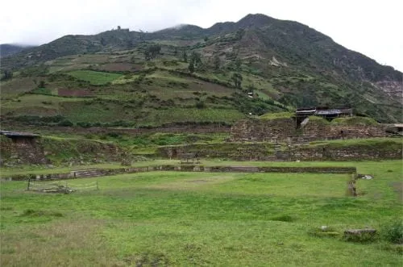Chavín de Huántar está entre los más completos sitios arqueológicos en la región de Ancash. Debe su nombre a los antiguos Chavín que en el pasado poblaran la región erigiéndose como una de las más destacadas culturas antes de los incas. El pueblo se encuentra a menos de tres horas en taxi de la ciudad de Huaraz, y aunque las vías no están en las mejores condiciones, el panorama te cautivará. Chavín de Huántar, Patrimonio Cultural de la Humanidad, sirvió en el pasado como núcleo de actividades religiosas, considerado de los más significativos oráculos de todo el Perú. Tras recorrer algunos de los pasadizos del monumento, llegarás al monolito de cuatro metros con forma de lanza que representa a Wari, el máximo dios. Asegúrate de transitar los pasadizos y galerías, así como de contemplar el altar de Choquechinchay y las cabezas hibridas entre hombre, pájaro y felino que guardan la entrada al templo o Cabezas Clavas. Vale la pena que contrates un tour para que los guías experimentados te muestren todo lo que hay por ver. Pese a concentrar el grueso de su atractivo en el antiguo templo, el pueblo de Chavín de Huántar ofrece un sustancioso museo arqueológico llamado Museo Nacional de Chavín y una bonita plaza que no está de más visitar. Te puedes hospedar en el Hostal La Casona o el Hostal Restaurante Chavín Turístico. Prueba la cocina peruana e internacional que ofrece el Tullpa Pizzeria Resto-Bar acompañada de una cerveza o un café artesanal.
4.Parque Nacional Huascarán
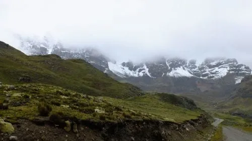El Parque Nacional Huascarán con sus 340000 hectáreas tiene jurisdicción en 10 provincias del departamento de Ancash desde Huaylas hasta Pomabamba. Por márgenes tiene el Callejón de Huaylas al oeste y el de Conchucos por el este. El más alto de sus montes níveos supera los 6700 metros sobre el nivel del mar, y su nieve alimenta las diversas lagunas que llaman a la aventura a turistas y curiosos del mundo entero. Una buena forma de llegar al parque es conducir cerca de tres horas desde Huaraz hasta Yuracorral. Desde ahí tomas el camino a pie hasta Laguna 69, te llevará cerca de 30 minutos. Elige una de las diversas rutas de trekking del parque y recuerda que es uno de los lugares para acampar en Ancash más adecuados para un encuentro íntimo con la naturaleza. Adicionalmente al atractivo natural, el parque te permite apreciar la cultura local en dos tiempos. Hay familias campesinas que explotan el turismo comunitario garantizando al extranjero relacionarse con los locales, ofreciendo incluso hospedaje en las sencillas cabañas que han levantado en sus patios. Asimismo, el parque tiene 33 de los grandes lugares arqueológicos de Ancash que te llevarán al pasado ancestral del pueblo. Recorre el parque a pie o bicicleta, contrata un tour de un día o dedícale más tiempo. Lo importante es que no dejes de visitar las lagunas de Querococha y Puruay, solo por nombrar dos de sus aclamados espejos de agua. Lleva ropa ligera y abrigo que no permita el paso de agua, y recuerda las infusiones de coca para evitar los malestares causados por la altura.
5.Cordillera Huayhuash
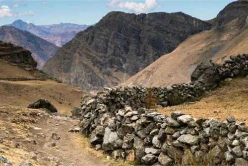La Cordillera Huayhuash es uno de los atractivos naturales de Ancash para los amantes del montañismo y el trekking, quienes encontrarán aventuras de entre dos y 12 días de camino. Tardarás cerca de tres horas para llegar en autobús desde el centro de Huaraz hasta Chiquián, ahí tomas otro colectivo que luego de cuatro o siete horas te dejará en el centro de Pacllón. Se encuentra a siete horas en autobús de Lima, Perú. Necesitarás un mínimo de ocho días para hacer el recorrido completo empezando y culminando en Llámac, Chiquián. Si consideras tener el entrenamiento y la condición necesaria, intenta escalar el nevado Yerupajá que rebasa los 6600 metros sobre el nivel del mar. En preparación para tu visita a la cordillera, consigue buros, guardianes para tu campamento, arrieros y más entre la Asociación de Servicios de Alta Montaña de Llámac. En estos sitios turísticos de Ancash los aranceles están destinados al crecimiento de las comunidades aledañas, prestadoras de los servicios que harán de tu aventura una experiencia segura e inolvidable. Para hacer trekking considera los caminos de Ichik Huayhuash, Munuay Huayhuash y la Huánuco Marka de cuatro, cinco y siete días de camino respectivamente. Ten en cuenta que la mejor temporada para visitar la Zona Reservada Cordillera Huayhuash es desde mayo a septiembre. Recuerda que tu equipo de campismo debe ser resistente a la nieve y que la necesidad de un guía con experiencia reside en el conocimiento de las zonas donde los deslizamientos son recurrentes
6.Callejón de Huaylas
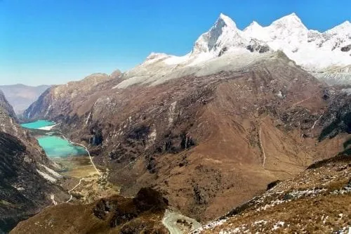Si estás en busca de los mejores lugares donde ir en Ancash, incluye el Callejón de Huaylas en tu itinerario de viajes. Los meses entre abril y octubre son los mejores para recrearse en este destino que tiene jurisdicción en el Parque Nacional Huascarán y sobre las ciudades de Huaraz, Yungay y Huaylas además de otras tres. Desde Huaraz te tomaría cuatro horas y media llegar en taxi hasta aquí. No hay mejor forma de examinar la Cordillera Negra y la Cordillera Blanca que tomando desde el Cerro Pan de Azúcar un liberador vuelo en ala delta o parapente. Incluso hay quienes practican vuelo a vela, que consiste en planear una aeronave aprovechando las corrientes de aire. Otros buenos puntos para estos deportes aéreos en el callejón son Willcacocha, el Cerro Buenos Aires y el Huinchus que es ideal para expertos. Ten en mente que Huaraz es la ciudad con la mejor infraestructura hotelera a lo largo de esta cadena de picos nevados y aunque sus mejores hoteles son de tres estrellas, están muy bien recomendados por quienes se han hospedado en ellos. No obstante, para una experiencia completa del Callejón de Huaylas, acampar en la montaña es la mejor alternativa. Asimismo, el callejón es una senda de deleite culinario donde comer cuy o conejillos de indias hecho en manteca de cerdo, un característico tipo de maíz, picante y choco entre otros. Lógicamente, los pequeños comercios de los locales tienen una sazón especial, pero también vale la pena visitar el Restaurante Turístico El Tarwi.
7.Laguna de Llanganuco
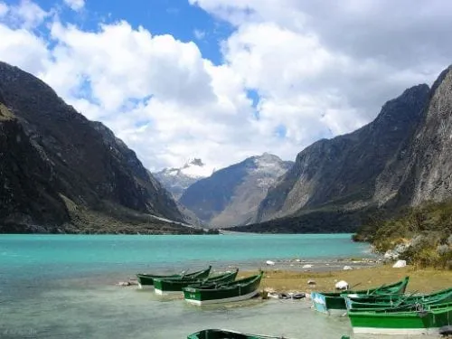En la base del pico níveo Huascarán, ciudad de Yungay se encuentran dos espejos de agua conocidos como las Lagunas de Llanganuco, uno de los lugares hermosos en Ancash más aclamados por el turismo nacional e internacional. Las lagunas se conocen como Chinancocha y Orconcocha y es mejor visitarlas fuera de temporada de lluvia entre abril y noviembre. Está permitido navegar y hacer windsurf en la Laguna de Chinancocha, mientras que en la de Orconcocha no, debido a la fauna que la habita y su comportamiento territorial. El ciclismo de montaña y el trekking están entre las actividades más populares en Llanganuco. El agua cristalina deja ver un encantador color turquesa que te llamará a nadar, pero las temperaturas dentro de esta pueden descender hasta los 7°C bajo cero. Cuando empaques, considera que el clima de las Lagunas de Llanganuco es notablemente seco y la temperatura suele ser de 10 ° C. Lleva protección contra el sol, y ropa fresca, además de abrigos impermeables. Hacer el viaje en autobús de Huaraz, te tomará menos de tres horas y gozarás de un hermoso horizonte. Difícilmente encontrarás mejores sitios naturales en Ancash para acampar, así que aprovecha la ocasión. Los pobladores de Llanganuco, en su ejercicio de turismo comunitario, ofrecen hospedaje en humildes cabañas construidas sobre sus terrenos. Es la oportunidad perfecta para probar la comida local, basada en la propia producción vegetal y animal de la zona. Además de un deleite para las papilas, es la ocasión para conocer la cultura autóctona.
8.Nevado Pastoruri
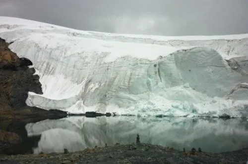A estas alturas ya sabes lo relevantes que son los picos nevados en el turismo del Perú. El Nevado de Pastoruri es de esos lugares naturales en Ancash que forman parte del Parque Nacional Huascarán, específicamente a la altura de la provincia Recuay en su distrito Cátac. Se ubica a tres horas conduciendo desde Huaraz o a siete en autobús desde Lima, Perú. Uno de los rasgos que distingue a este nevado de sus hermanos de la Cordillera Blanca es que ha sufrido los embates del cambio climático, por ende, su cima no está totalmente cubierta de nieve como en el pasado, y buena parte de su glaciar ha sucumbido ante el calor. Es por ello que existe la Ruta del Cambio Climático, volviendo el turismo de la zona consciente y ecologista. Entre lo que no puedes dejar de ver en Pastoruri figura la Laguna de Patococha, el Ojo de Agua Pumapashimi y los pozos y fuentes de agua gasificada que brotan de la tierra en el camino hacia la cima. Como otras zonas del parque nacional, el monte es rico en Puya de Raimundi, especie de planta endémica que puede alcanzar los 12 metros de altura. El deshielo ha dejado al descubierto pinturas rupestres y fósiles de dinosaurios ubicando el nevado también entre los sitios históricos de Ancash. Al mismo tiempo sus paredes son ideales para iniciarse en el montañismo. Si planeas hacer un recorrido extenso, no podrás pernoctar en un hotel, pero sí instalarte en la zona de campamento del nevado.
9.Laguna Churup
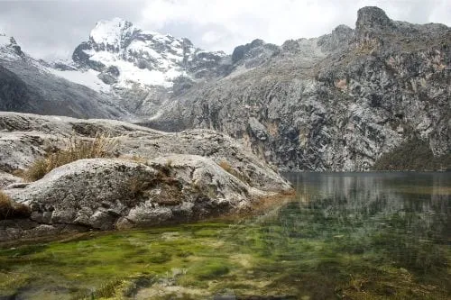A no más de 15 minutos en taxi del centro de Huaraz se encuentra la Laguna Churup, a un poco menos de 4500 metros sobre el nivel del mar. Se accede a pie por uno de los senderos de trekking desde la aldea de Pitec. Está entre los lugares típicos en Ancash para los amantes del trekking y el montañismo. Asimismo, hay varias lagunas pequeñas adyacentes que puedes visitar en cortas caminatas. Exactamente en la laguna no hay más opción de pernocta que instalar un campamento, actividad para la cual se recomienda estar en grupos numerosos. Si realmente quieres pasar la noche en un hotel, dispones de los que tiene Huaraz. Laguna Churup se conoce alternativamente como la laguna de los siete colores debido a los colores que el reflejo de sol sobre sus aguas proyecta. Para disfrutar de esta exhibición sin exponerse a los deslizamientos de tierras, planifica tu visita entre abril y octubre. Para una experiencia memorable y segura, ten en cuenta que es indispensable la orientación de un guía calificado y que es mejor hacer la visita en grupos. Es clave iniciar el ascenso lo suficientemente temprano como para ir a un ritmo calmo que no cause deslizamientos. Si no deseas dormir junto a la laguna, inicia tu descenso entre las tres y las cuatro de la tarde, antes de la caída del sol.
10.Caraz
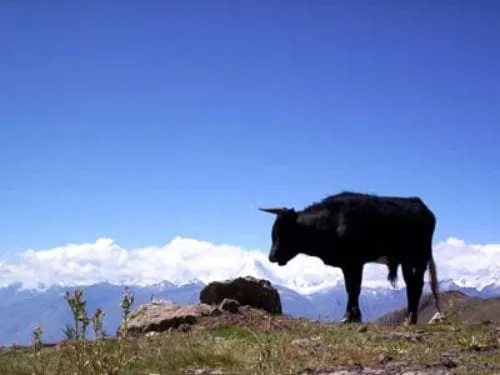Caraz, capital de la provincia de Huaylas, es una espléndida y conocida ciudad en el Callejón de Huaylas. Es de los típicos destinos turísticos de Ancash de oferta versátil con sus caras arqueológica, aventurera y deportista. Desde Huaraz te tomaría hora y media llegar en combi o autobús. Siendo Caraz una de las últimas paradas en la ruta gastronómica del Callejón de Huaylas, no pierdas la ocasión de probar la trucha frita y otros platos típicos como el picante de cuy en el restaurant Mi Carás. De igual manera, el Costa Verde te ofrece platos aclamados como el chicharrón y el ceviche. Considerando que se le conoce como “Caraz dulzura”, te interesará probar los dulces artesanales de leche, chirimoya y fresa. Si deseas acomodarte en un hotel, considera el Apu Ecolodge, que te ofrece acceso a internet y alquiler de bicicletas entre otras amenidades. El Hostal y Restaurante Business Rosh y Los Pinos Lodge son buenas opciones de hospedaje, en especial por su relación calidad-precio. Esta atractiva ciudad de claveles es puerta de entrada a una de las más célebres rutas de trekking que es la de Santa Cruz, conducente a la Cordillera Blanca tras un recorrido de entre cuatro y cinco días. El Cañón del Pato es otro de los lugares que visitar en Ancash para llenar tus viajes de aventura y deporte.